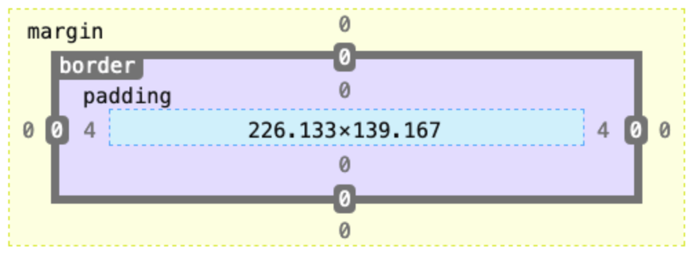

CSS MARGINS VS PADDING: WHAT'S THE DIFFERENCE?
MARGINS
For our element if we create a margin of 20px, it pushes other elements away. This is how much space will be between our element and another element on the page. We use margins to change where an element sits on a page. The white space we create between elements on a page using margins is important for how we visually view a webpage. We can also use negative margins to overlap elements.
PADDING
For our element if we create padding with 20px, it has this much space around the four sides of it. This is how much space will be in our elements gap, increasing or decreasing depending on how many pixels we select to use. We use padding to determine how our content looks within the element. We can give the content more or less space from its border, creating white space within the element. This is useful for expanding the clickable area on an element.
BOX MODEL
The padding space is between the content and border of element and the margin is around the elements border. The border sits between the padding and margins. By default it has no weight, you can choose to add width using the border property. These elements together create the CSS Box Model. This is used for page design, essentially every HTML element is wrapped inside this layered box.
